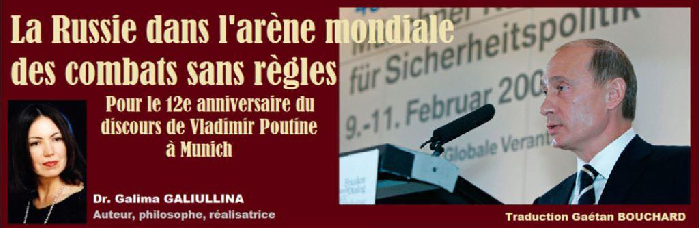
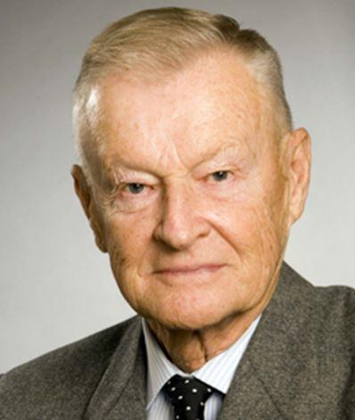
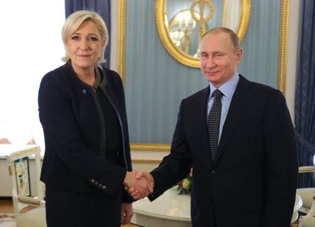

La Russie dans l’arène mondiale des combats sans règles. Pour le 12e anniversaire du discours de Vladimir Poutine à Munich
par Galima GALIULLINA

Si le monde vous offre la « loi de la jungle », vous devez alors jouer selon les « lois de la taïga ».
Sergueï Karaganov
L'année 2000 n'a pas été seulement le commencement d'un nouveau millénaire, mais aussi un changement intéressant dans les pièces de l'échiquier mondial. En Russie, Vladimir Poutine a eu la bénédiction du fatigué et mourant Boris Eltsine pour exercer le pouvoir, et aux États-Unis, George W. Bush a remporté les élections, ou du moins a eu en cadeau l'emploi de la Cour suprême. Ces deux personnages allaient entamer une nouvelle partie sur l'échiquier. Vladimir Poutine a dirigé un pays où la cleptocratie exultait et se réjouissait du pouvoir et de l'immensité des richesses pillées, et des richesses qui n'avaient pas encore été volées. Elle construisait un partenariat avec les cleptocraties de l'Ouest, pendant que la Russie voyait sa population diminuer de 2 millions par année, un avenir sombre pointait à l'horizon.
George W. Bush était à la tête du pays, où les néoconservateurs avaient déjà goûté au poison de l'impunité et regardaient d'un œil avide le Moyen-Orient, maintenant sans défense, mais plein à craquer d'or noir et d'autres trésors. Les positions-clés de la domination américaine dans les domaines militaire, économique, technologique et du « soft power », ont permis à la superpuissance de déclarer pleinement son droit de gouverner le monde entier pour son propre bien, sa paix et pour ses propres intérêts. L'empire hégémonique est entré dans l'arène avec toute la splendeur de son pouvoir invincible. Francis Fukuyama a résumé le développement de l'humanité avec la thèse sur la fin de l'histoire et la domination éternelle des États-Unis.
En 1997, Zbigniew Brzeziński annonçait avec enthousiasme, pour la première fois dans l’histoire :
Un seul État est une puissance mondiale gouvernant le monde ;
Un État non eurasien à l'échelle planétaire est la force dominante dans le monde ;
L'Eurasie, l'arène géopolitique centrale de notre monde, est subordonnée à un État non eurasien.
(Z. Brzeziński, « « Le grand échiquier »)
L’exaltation de Brzeziński au sujet de la subordination de l’arène géopolitique centrale du monde au seul souverain du monde, les États-Unis, a été associée à l'objectif acharné de la tâche principale pour l’avenir - conserver ce pouvoir pour toujours. L'omission du principal idéologue et démiurge du monde unipolaire était qu'il n'avait pas le temps de se rendre à l'évidence : vous ne pouvez pas perdre ce que vous n'avez jamais possédé.
La doctrine du cerveau principal de la grandeur impériale américaine est étonnante : en utilisant la terminologie des temps les plus brutaux des empires antiques, les trois grands devoirs de la géostratégie impériale sont les suivants :
Prévenir la collusion entre les vassaux et préserver leur dépendance vis-à-vis de la sécurité globale ;
Maintenir la soumission des subordonnés en assurant leur protection ;
Prévenir l'union des barbares.
(Z. Brzeziński, « Le grand échiquier »)
Brzeziński n'est pas timide dans ses expressions, pourquoi devrait-il l'être ? Pour lui, la victoire était entre ses mains, les barbares ayant été immobilisés, il ne lui reste plus qu'à conserver ce pouvoir pour toujours !
VLADIMIR POUTINE SUR LA SCÈNE MONDIALE : PREMIER ACTE
Le discours de Vladimir Poutine à Munich le 10 février 2007 doit être régulièrement revu1 par les politiciens qui tentent une nouvelle fois d'ébranler le monde avec un dilemme tiré du roman Crime et Châtiment de Dostoïevski - « Je tremble ou j'ai le droit», le syndrome de Raskolnikov a été sensiblement aggravé au cours de ces années par l'élite politique de l'empire hégémonique et de ses satellites, lorsque la Russie est apparue devant le monde vidé de son sang et sans défense. Aucun d'entre eux ne s'attendait à un tel appel du jeune dirigeant d'un pays mourant. Pour la première fois en 16 ans, la Russie a joué sur la scène internationale le rôle audacieux sans précédent d'un pays sortant des ruines planifiées par l'Occident et prenant conscience du pouvoir de contester la justesse d'un monde asservi par l'empire hégémonique. Il est intéressant de regarder maintenant les visages des politiciens occidentaux alors dans la salle, peut-être pour la première fois de leur vie, confrontés à une vérité qui ramène à la réalité.
Mais la vérité dans la bouche de Poutine a sonné l'alarme avec son challenge :
« Mais qu'est-ce qu'un monde unipolaire ? Quelle que soit la manière dont ils ornent ce terme, cela ne signifie finalement en pratique qu’une chose : un centre de pouvoir, un centre de gouvernance, un centre de décision. C'est le monde d'un seul maître, d'un seul souverain. Et ceci est finalement destructeur, non seulement pour tous ceux qui entrent dans le cadre de ce système, mais également pour le souverain lui-même, car il le détruit de l'intérieur. »
Comment les politiciens qui représentaient les intérêts du « souverain » ce jour-là à Munich ne pouvaient-ils pas entendre cet avertissement de Poutine ? Après tout, cela ne semblait pas être une menace, mais quelques bons conseils amicaux. Dans l'extase du pouvoir exercé sur le monde entier, qui parmi les politiciens américains et leurs vassaux pouvait alors croire Poutine ?
« Je pense que pour le monde moderne, un modèle unipolaire est non seulement inacceptable, mais également impossible. Le modèle lui-même est inopérant, dans la mesure où il ne constitue pas et ne peut constituer la base morale et éthique de la civilisation moderne. »
Diagnostiqué avec précision avec une maladie mortelle n'a pas aidé le patient, l'empire s'est précipité dans l'abîme en étapes impressionnantes. Aujourd'hui, nous assistons à une paralysie du pouvoir dans tout l'empire transatlantique, car, comme l'a dit Lord Acton, le pouvoir tend à corrompre et le pouvoir absolu corrompt absolument.
LES ANNÉES 90 EN RUSSIE : LES LEÇONS DE LA TRAGÉDIE
Que pouvaient ressentir les « habitants des écuries » ?
Quand a commencé le réveil des troubles des mirages de la démocratie libérale ? Quand on a vu Clinton mourir de rire à côté d'Eltsine l'ivrogne. Lorsque la Maison-Blanche à Moscou est devenue noire à la suite des tirs de chars d'assaut en 1993, aucun deuil pour les centaines de victimes par ceux dont ils voulaient protéger la liberté.
Lorsque des foules d'enfants de la rue en état de transe en reniflant de la colle, et des jeunes filles qui rêvaient de devenir prostituées.
De la tragédie des années 90, les Russes ont appris plusieurs leçons importantes :
La souveraineté d'une nation peut être perdue non seulement en cédant des positions à l'armée ennemie, mais elle peut disparaître insensiblement et silencieusement en raison de la trahison de leurs élites ;
Le partenariat avec les pays occidentaux est en fait - des relations vassales imposées, conduisant inévitablement à la ruine, à la perte de la culture nationale, au pillage de la richesse nationale, à la pauvreté et à l'appauvrissement de la population et à la vie de luxe éhontée de l'élite compradore ;
La privatisation a été la leçon du sevrage le plus cynique et le plus impitoyable de la richesse collective de la nation par une bande de libéraux qui ont été formés en thérapie de choc selon les remèdes économiques prescrits par Milton Friedman ;
Ayant perdu sa souveraineté dans des domaines clés des activités de la nation : militaire, financière, informationnelle, éducative et alimentaire, la nation devint esclave, bien que les superviseurs soient très présentables dans les bureaux bancaires et les édifices rutilants des sociétés transnationales (TNK) ;
Toute tentative de désobéissance est sévèrement punie par des sanctions, la pression de l'information, l'isolement sur la scène internationale et le discrédit ou la diabolisation du dirigeant national.
Une analyse de la stratégie de Poutine pour relancer la Russie et changer sa position sur l'arène internationale montre sur quelles positions initiales il s'est appuyé au début du chemin :
Un souverain au pouvoir absolu n'a pas besoin du cadre contraignant du droit international, ce qui signifie qu'il est inutile de compter sur les institutions qui le soutiennent, sauf pour celles où la Russie a encore un droit de veto ;
La morale pour le souverain devient un fardeau supplémentaire (Ayn Rand et Nietzsche) donc, le souverain ne reculera devant rien, même la violation la plus répugnante des normes morales, parce que le sort des vassaux est la soumission et l'approbation sans condition ;
Presque tous les anciens alliés de l'URSS ne voient plus la Russie comme un allié et ne cherchent pas à coopérer, la Russie est seule sur le champ de bataille comme jamais auparavant ;
Le seul moyen de salut est de compter sur le peuple russe, qui a déjà réalisé la tragédie de son expérience de la démocratie et de l'amitié avec l'Occident, et qui a goûté à la douleur de la trahison des élites ;
Il faut rétablir rapidement et imperceptiblement l'efficacité au combat de l'armée et de la marine, puis, en s'appuyant sur la mémoire nationale des batailles gagnées, commencer à se préparer pour le grand match.
LE PRÉCURSEUR DE LA CRISE IDÉOLOGIQUE DE L'EMPIRE AMÉRICAIN
Les desseins impériaux aux États-Unis ont prospéré grâce à la philosophie de l'atlantisme dans les propos crus d'Ayn Rand (Alice Rosenbaum), l'inspiratrice idéologique et la principale sorcière de l'establishment américain à la fin du XXe siècle. Chaque année, à travers le monde, plus d'un demi-million d'exemplaires de ses livres sont publiés, jusqu'à maintenant plus de 25 millions ont été imprimés.
Non seulement l'intérêt pour les livres de Rand ne s'estompe pas, mais augmente aussi de façon presque exponentielle.
Les idées du Rand ont façonné la troisième génération des élites économiques et politiques de l'Occident.
La personne à la tête de laquelle s'est formée la vie financière et économique du pays et du monde entier a été pendant de nombreuses années membre du « Collectif » du groupe Ayn Rand, un fidèle étudiant et admirateur. La philosophie de l'objectivisme a eu une grande influence sur Alan Greenspan qui se souvient : « Elle m'a fait croire que le capitalisme n'est pas seulement un système efficace et pratique, mais aussi très moral. »
Ayn Rand était une fervente partisane de la supériorité du libre marché sur toutes formes de collectivisme et de socialisme. Elle a essayé de prouver la moralité du capitalisme libéral, considérant le libre marché comme un mal nécessaire, le mieux adapté à la nature humaine imparfaite.
Les Russes n'ont rien trouvé de moral dans le capitalisme libéral, non seulement parce que les premières années de thérapie de choc les ont terrifiés avec une cruauté et une injustice absolue, mais parce qu'ils se souvenaient d'autres relations et d'autres valeurs. Les Russes avaient une puissante défense immunitaire contre la cupidité, la vénalité, l'hypocrisie, ils n'avaient rien de cynique dans leur âme pour voir les autres mieux ou pire qu'eux. La société de l'égalité et de la fraternité a laissé une marque indélébile dans la mémoire de la nation.
En 1964, deux ans seulement après la crise des Caraïbes, Ayn Rand a donné une entrevue à la revue Playboy.
Playboy: Vous avez dit qu'aujourd'hui, toute nation libre a le droit moral, sinon l'obligation, d'attaquer la Russie soviétique, Cuba ou tout autre enclos d'esclaves. Est-ce vrai ?
Ayn Rand : Absolument. Un État totalitaire qui viole les droits de ses citoyens est hors la loi et n'ose pas faire valoir ses propres droits.
*Comme les jumeaux idéologiques Ayn Rand et Zbigniew Brzeziński sont clairement liés à cette métaphore frappante de « l'enclos d'esclaves pour le bétail » ! Et combien de temps pourrait-on s’attendre pour que les esclaves veuillent rester dans l'enclos sans vouloir essayer de sauter par-dessus les clôtures de la forteresse. Aujourd'hui, même les pauvres d'Haïti se rebellent et prient Poutine de venir à leur secours et de les libérer. Ils veulent devenir une colonie de la Russie, sachant par l'histoire que les vrais Russes n'ont jamais traité les autres peuples comme du bétail.
La séquence sémantique de la métaphore d'Ayn Rand de « l'enclos d'esclaves pour le bétail » et la thèse de Brzeziński sur la préservation de l'obéissance des barbares sont éclairantes. S'il s'agit d'un pays avec un gouvernement légitimement élu comme la Russie, la Libye ou la Syrie qui pratique une démocratie imparfaite selon l'opinion des nations « libres », il faut alors s'attaquer à « l'enclos d'esclaves pour le bétail ». Et puis vous pouvez suivre les règles de Brzeziński et « maintenir la soumission des subordonnés » par tous les moyens possibles et pour toujours !
Comment était-ce possible, avec un masque aussi laid d'hypocrisie, de compter sur la préservation du « soft power » des États-Unis dans un monde en mutation rapide ? Dans un monde où les médias officiels aspirent encore à contrôler la doxa des événements, mais qui ne dominent plus les esprits ? L'internet et les réseaux sociaux ont changé le monde, non pas en faveur des médias trompeurs, et de ceux qui sont habitués à contrôler les masses comme le bétail esclave dans l'enclos, car ils ont perdu.
ÉTAT PROFOND ET PEUPLE PROFOND
En comparant les positions de combat de deux acteurs mondiaux dans l'arène du combat sans règles, nous constatons ce qui suit. Les États-Unis sont gouvernés par un État profond, et leurs intentions sont parfaitement transparentes. Ils sont engagés à se préserver eux-mêmes et à préserver leur pouvoir pour toujours. De plus, le pouvoir se situe à l'échelle mondiale, puisque la plus petite échelle ne correspond pas aux tentacules de cette pieuvre qui a grandi pour garantir ses « intérêts » et ses appétits. Mais pour les ressources du pouvoir, la réalité est plutôt triste. Les satellites remettent rapidement en question leur loyauté, ce qui est observable sur tous les continents, mais il serait particulièrement triste pour Brzeziński de voir maintenant que l'Eurasie est presque complètement hors de contrôle, et qu’il existe des processus et des projets d'intégration incroyablement vastes auxquels l'empire hégémonique n'est pas invité. Même les satellites les plus dévoués commencent à regarder autour d'eux, alarmés, dans l'espoir de s'orienter dans le brouillard des changements et de se cramponner à une épaule plus fiable. Le vide géopolitique, qui devait être comblé sur les os de la Russie, aux dépens de la Russie et contre la Russie, est sans aucun contrôle, rempli par d'autres acteurs qui n'obéissent pas à la superpuissance mondiale.
En outre, non seulement la Russie et la Chine reconstruisent des espaces d'attraction, mais l'Europe s'est avérée être intellectuellement préparée à un éloignement imminent de la superpuissance mondiale. La « Nouvelle École française de Droit » est centrée sur la puissance du continent eurasiatique (basée sur une « histoire commune » et un « destin commun ») et le rejet de l'atlantisme et du mondialisme. « L'Appel des Ancêtres » est l'archétype socioculturel qui sous-tend le scénario géopolitique. La menace attendue pour le « destin commun » du continent eurasiatique en cas d'une éventuelle alliance géopolitique entre les États-Unis et la Chine s'est littéralement transformée sous nos yeux en un autre espoir hégémonique détruit.
En même temps, dans différents scénarios géopolitiques (J.Tiiar, C. Terracino, J. Parvulesco), la Russie se voit confier le noble rôle de sauveur de l'Europe, de tout le continent eurasien, des revendications de l'Alliance atlantique. En observant l'effondrement de l'Union européenne, on espère que les intégrateurs européens auront la sagesse de se tourner vers les possibilités de codéveloppement avec les projets de l'Organisation de coopération de Shanghaï (OCS), l'Union économique eurasienne (UEEA) et l'Initiative de la Route de la Soie (BRI).
L'État profond s'est avéré idéologiquement et géopolitiquement en faillite, ce qui n'est pas surprenant si l'on considère que les néoconservateurs ont réduit toute la puissance intellectuelle de la géopolitique en une pragmatique sordide et inhumaine, justifiant ainsi des plans stratégiques pour des opérations militaires ou l'expansion économique des entreprises américaines et les aspirations d'Israël. Après avoir nourri toute une génération d'Américains de mythes sur une nation exceptionnelle, sur la fin de l'histoire et la mission de démocratiser le monde entier, le récit néoconservateur adopté comme évangile d'État s'est avéré être en faillite morale. Celui qui avait promis de sortir la pieuvre de l'État profondément enraciné dans la fange de la vie politique, est arrivé au pouvoir, mais maintenant la nation ne sait pas avec certitude qui l'a amené à la Maison Blanche et dans quel but. Mais, comme cela a déjà été prouvé, les Russes n'ont rien à voir avec cela.
Y a-t-il aujourd'hui une crise de pouvoir dans la Russie moderne ? Il ne fait aucun doute que les Russes se sont vite lassés des promesses vides du gouvernement libéral de Medvedev, mais si vous observez l'humeur des gens aujourd'hui, le degré de confiance en soi se renforce. Vladislav Sourkov a proposé une nouvelle formule pour définir cette constante organique interne qui, dans les Russes, dure de siècle en siècle, que ni les réformes, ni la révolution, ni la guerre ne peuvent briser ou changer. Les gens profonds en Russie disent cela d'eux-mêmes : « Dans mes gènes, il est enregistré qu'un bon envahisseur n'existe pas. » Par conséquent, à l'heure terrible de la guerre, tous les Russes - vieux, jeunes, enfants et femmes - sortent pour combattre l'ennemi.
La nation profonde, à travers le chagrin de chaque famille russe, se souvient à jamais de tout ce que les civilisateurs occidentaux ont apporté à chaque bénéficiaire et à quel prix pour les Russes. De toutes les bénédictions terrestres, les Russes apprécient avant tout la possibilité de vivre à leur façon sur leur propre terre. Vous pouvez compter sur ces gens à l'heure des épreuves, ces gens peuvent être inspirés par un grand rêve.
Y a-t-il des gens profondément enracinés en Amérique ? Il y en a eu dans le passé, avant de faire de l'Amérique une superpuissance mondiale. Mais depuis 30 ans, la classe moyenne et la classe ouvrière ont pratiquement disparu, car les usines ont quitté le pays au nom des profits des entreprises transnationales. L'économie de l'information et l'économie numérique des équipes de bureau ne feront jamais un peuple profondément enraciné à cause des lois darwiniennes de survie, les intellectuels ont toujours été des chercheurs de vérité, les étudiants sont maintenant écrasés par le poids des prêts aux études. Les médias, qui pourraient jouer un rôle clé dans l'unification de la nation autour d'un grand et noble objectif, sont engagés dans la chasse aux sorcières et dans la corruption de tous ceux qui peuvent encore être corrompus.
LA RUSSIE NE S'INGÈRE PAS DANS LES ÉLECTIONS, ELLE INTERFÈRE DANS LE CERVEAU !
Lisez le rapport de l'Institut Carnegie, autrefois un sérieux « think tank », et voyez la réalité paranormale :
« L’activité mondiale croissante de la Russie est un grave problème pour l'ordre international dirigé par les États-Unis et pour les principaux piliers qui la soutiennent. Les principales priorités de Moscou sont l'affaiblissement des institutions de sécurité euro atlantiques, des institutions politiques et économiques, ainsi que le sapement de l'unité européenne et de l'influence mondiale des États-Unis.
La tentative de la Russie d'influencer les élections aux États-Unis aurait probablement dû discréditer et miner la confiance du public dans le système politique américain et dans le processus électoral, ainsi que miner l'image du pays à l'échelle mondiale. L'état de la politique américaine a profité au Kremlin, et les retards de l'administration dans le développement d'une nouvelle politique américaine dans diverses régions créent un vide des puissances occidentales en recul, que la Russie, la Chine ou d'autres États peuvent utiliser à leur avantage. »
Il faut comprendre que le vide des puissances occidentales en recul, c'est bien la Russie, la Chine et l'Iran qui comblent le vide, non pas par des bombes et des armes, ni par l'agression ou le renversement de gouvernements étrangers, mais d'une manière plus attrayante en signalant un avenir différent de la terre brûlée que nous offre l'Ouest et les ruines fumantes des villes.
Vladislav Sourkov n'a pas manqué l'occasion de se moquer des élites occidentales :
« Les politiciens étrangers attribuent à la Russie l'ingérence dans les élections et les référendums dans le monde entier. En fait, l'affaire est encore plus grave : la Russie interfère dans leur cerveau, et ils ne savent pas quoi faire de leur propre conscience modifiée. »
Ici, il est nécessaire de préciser que la conscience a changé parmi les peuples, mais qu'elle est restée la même chez les politiciens. Par exemple, pour changer la conscience du peuple grec, l'intervention de Moscou n'était pas nécessaire, il suffisait d'étrangler la Grèce dans les embrassades de la dette du FMI et les règlements de l'UE, et de saisir les ports et la flotte marchande pour dettes. Pour changer la conscience des Français, il a suffi d'inonder les rues confortables des villes françaises de milliers de réfugiés qui n'ont pas une goutte de miséricorde dans leur cœur pour ceux qui ont détruit leurs maisons et leurs pays.
Notez que parmi les 25 points des exigences posées par les « Gilets Jaunes » au gouvernement Macron, deux sont d'une importance capitale : le retrait de la France de l'OTAN et l'arrêt des agressions contre d'autres pays. La lutte des « Gilets Jaunes » dure depuis trois mois et les méthodes brutales de répression ne font que réchauffer l'ardeur des manifestants.
L'OMBRE MENAÇANTE DE LA GUERRE
Il est nécessaire d'envisager une nouvelle architecture de sécurité mondiale, dans laquelle les blocs inadaptés du centrisme américain, de l'eurocentrisme, de l'expansion et de la dictature des nations exceptionnelles seront supprimés. Le monde a plus que jamais besoin de justice comme base des relations entre les États, les autorités et les personnes, les employeurs et les employés. Comment introduire cette pierre angulaire dans le monde, fatigué des conflits et des guerres, cela ne peut être résolu que dans le processus du dialogue. Des états d'âme en panique se manifestent chez les analystes en rapport avec leur sentiment de la perte de leur vision de l'avenir en raison de l'ombre grandissante de la guerre.
Andrew Monogan, directeur de recherche pour la Russie, et de la défense et la sécurité de l'Europe du Nord au Pembroke College, à l'Université d'Oxford (Royaume-Uni), qui étudie la nature des changements de guerre, a proposé un nouveau concept - « guerre de perception » où le champ de perception est aussi un champ de bataille où l'État lui-même doit imposer cette perception", - croit Monaghan, ajoutant que « nous passons de la guerre, comme guerre des armées, à celle de toutes les sociétés ».
Ayant très bien défini le nouveau type de guerre, Monaghan commet encore une fois une erreur typique pour l'Alliance Atlantique, faisant valoir que l'État devrait imposer une telle perception. Il est temps de se rendre compte de l'expérience de l'erreur fatale des États-Unis lorsqu'ils ont imposé leur perception du monde comme superpuissance, mais qu'en retour ils ont reçu haine et rejet.
La Russie n'impose pas ses propres perceptions à quiconque ; elle a beaucoup à faire dans les années à venir - donner naissance à de nombreux enfants, construire des maisons pour leurs familles, développer de vastes espaces, les percer d'artères de nouvelles autoroutes et voies maritimes, redonner espoir en un avenir meilleur aux peuples du monde. La Russie n'aime pas la guerre et ne l'a jamais aimée, mais elle est toujours prête à se défendre. Dès 2012, la « perspective à long terme de créer des armes basées sur la redécouverte de principes physiques : optique, géophysique, ondes, génétique et psychophysique » soulignée par Poutine, était déjà incarnée dans certains types d'armes testés et déployés pour la défense de la Russie. La jeune génération de scientifiques et d'ingénieurs russes surpasse toutes les générations précédentes en puissance intellectuelle.
Dans l'arène du combat sans règles, les Russes ont vraiment un avantage énorme, ils ont gagné dans toutes les conditions, suivant les règles de la noblesse de l'esprit du guerrier, mais nous avons aussi une expérience inestimable de la survie dans la taïga, où seuls les idiots étrangers peuvent penser qu'il n'y a pas de règles. Ainsi, si l'on considère la Russie d'aujourd'hui telle que définie par Poutine, il est clair que la déclaration de 2007 à Munich était prophétique et que seuls les sceptiques occidentaux persistent à éviter sa sagesse.
Partager cette page